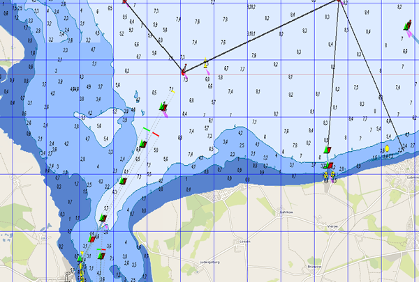

2021/08/22
adaptation for mobac 2.2x, new BSH layers
2020/01/26
Some minor modifications to fix access to BSH servers.
For Mobile Atlas Creator I created a couple of map sources that will give you more control when accessing online map sources with some xml config. You need to unpack the file avnav-mapsources.zip within the directory "mapsources" of the Mobile Atlas Creator. For mobac versions < 2.2.1 please use avnav-mapsources-before22.zip.
You will get (among others) a "mashUp" with BSH chart services (see bsh-viewer) and OpenSeaMap ("BSH OpenSeaMap 2021 Extended"). Additionally BSH allone ("BSH 2021 Extended") or OpenSeaMap + OpenStreetMap ("OWS OpenSeaMap 2021").
If you want to modify - just adapt the .exml files. You can try the BSH layers with my bsh-viewer (just edit the sources on the right side). Additionally you can adjust the colors (I tried to get some more contrast). To change the color mappings you can open one of the tiles with a grafics program and pick up the hex values for the colors you would like to change. Those must be adapted inside the .exml files.
Typically the download will run for a long time - the BSH servers are slow. If the download fails, just try again in MOBAC. Set the cache to a sufficient expiration time (e.g. one month). Always use "OsmdroidGEMF" as atlas format.
If you apply changes to the .exml files you need to delete the databases for this chartsource (on tilestore tab) and restart MOBAC.
Source files on github.
The result could look like this ... (approach to Greifswald):

The download: